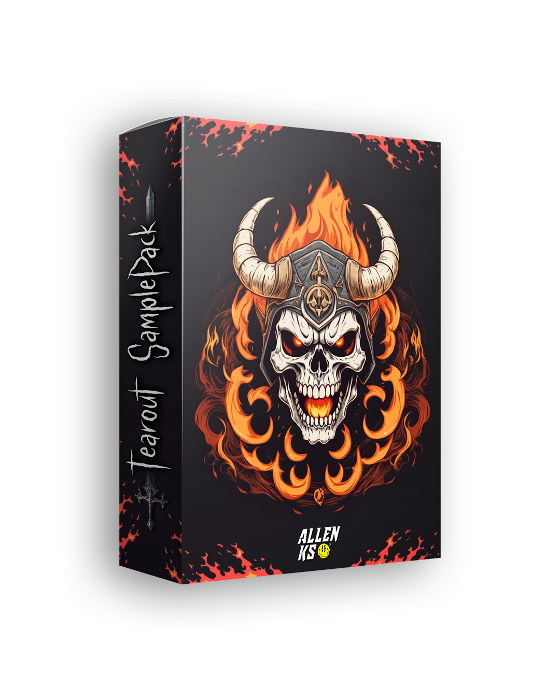
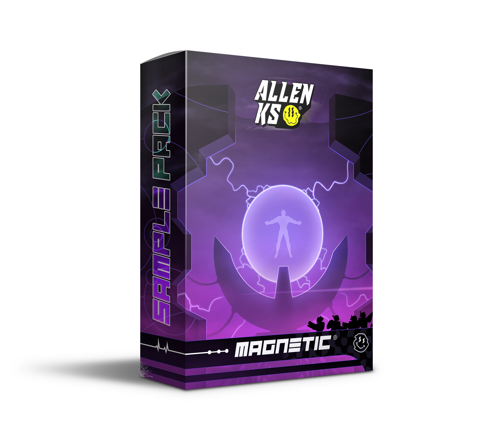

ALLEN KS / SAMPLE PACK01

HEAVY · TEAROUT · DISTORTEDTEAROUT
TEAROUT
VOL. 1
Para sonidos más agresivos, pesados y con carácter.

Soy ALLEN KS, productor y DJ argentino de Dubstep / Bass.
Descubrí el dubstep en 2016. Lo que empezó como una curiosidad por esos bajos pesados terminó convirtiéndose en mi forma de crear, explorar sonidos y conectar con la gente.
Desde Buenos Aires sigo experimentando, aprendiendo y compartiendo mi música. Entre el estudio, las mezclas y los shows, siempre busco que cada proyecto tenga su propia identidad.
HECHO EN BUENOS AIRES
 FREE
FREEUn poco de mi sonido, directo a tu biblioteca. Escuchalo acá y descargá el tema completo desde su enlace oficial.
Escuchá, descubrí y llevate los tracks con descarga gratuita disponible.
Ver toda mi músicaRECURSOS PARA PRODUCTORES
Dos universos, distintas texturas.
Elegí desde dónde querés empezar.

Para sonidos más agresivos, pesados y con carácter.

Otra faceta de mi universo sonoro para probar ideas nuevas.
Clases individuales, feedback y producción en FL Studio. Una mano para llevar tus ideas más lejos, a tu ritmo.
Consultar clases